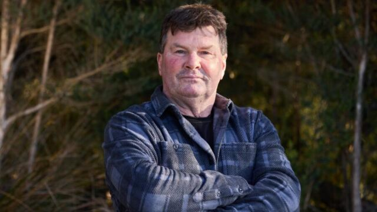
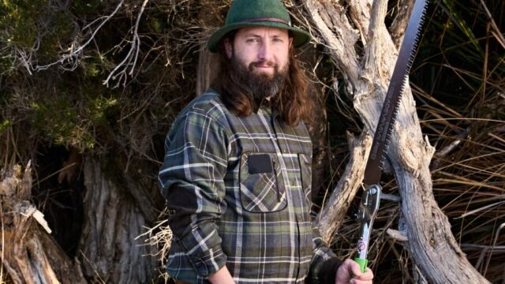
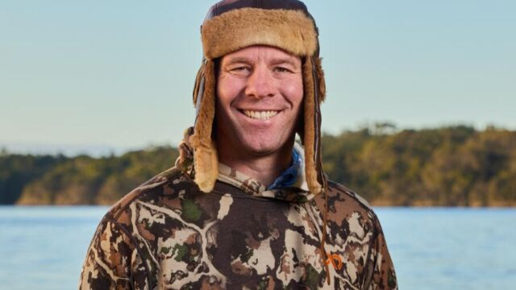
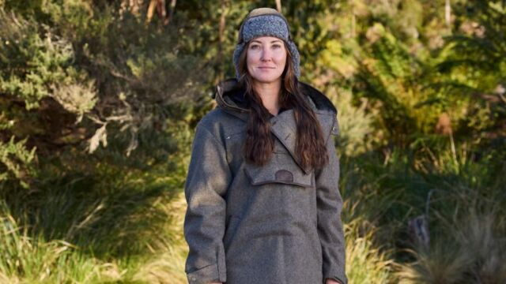
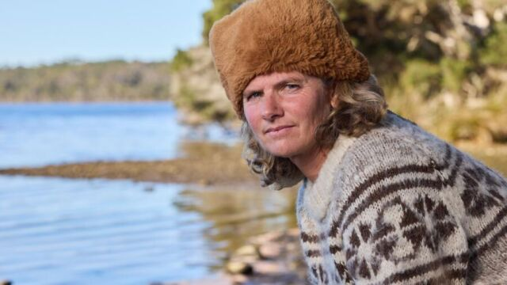
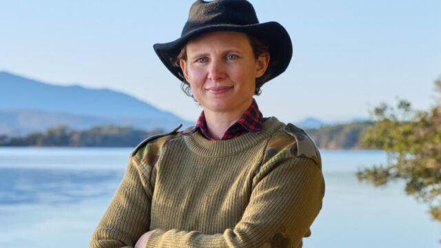
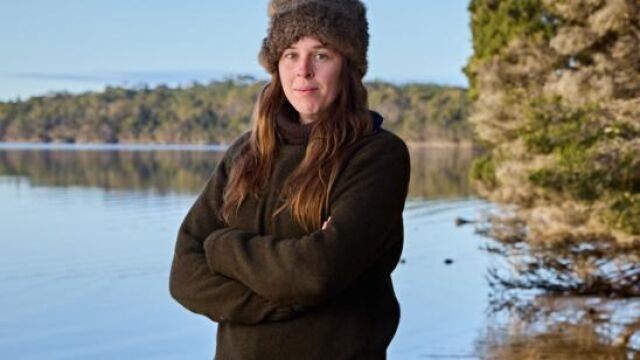
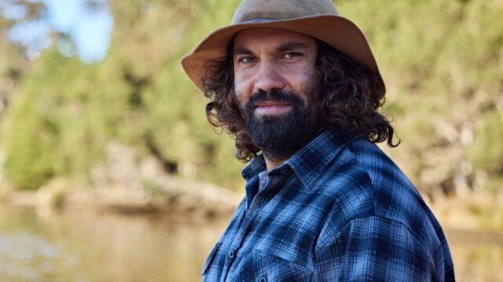

1stWinner
1stWinnerShay Williamson
Profressional Trapper
- Lasted
- 76 days
- Age
- 30
- From
- Whakatāne, New Zealand
Alone Australia
lutruwita / Tasmania, Australia · Premiered 26 Mar 2025
Days each survivalist lasted, in finishing order, and why they tapped out. Every season page uses the same 0–100 day scale so seasons can be compared at a glance.









Who they are, where they're from and the ten items they carried in.
1stWinnerProfressional Trapper
Bushman
3rdplaceFood Safety Consultant
Ecologist
English Teacher
Expedition Leader
Farmer And Permaculturalist
Disability Services
Rewilding Facilitator
Indigenous Youth Worker
How many survivalists chose each item (items grouped into simplified categories).
Air dates, survivalists remaining at the start of each episode, viewers and IMDb rating.
| Ep | Title & opening quote | Aired | Remaining | Viewers (M) | IMDb |
|---|---|---|---|---|---|
| 1 | Episode 1“Tell me, what is it you plan to do with your one wild and precious life?” — Mary Oliver | 26 Mar 2025 | 10 | — | |
| 2 | Episode 2“We will either find a way or make one” — Hannibal | 26 Mar 2025 | 10 | — | |
| 3 | Episode 3“We are the sum total of our hungers” — A. W. Turner | 2 Apr 2025 | 10 | — | |
| 4 | Episode 4“And into the forest I go, to lose my mind and find my soul.” — John Muir | 9 Apr 2025 | 9 | — | |
| 5 | Episode 5“We mortals, men and women, devour many a disappointment between breakfast and dinner-time” — George Eliot | 16 Apr 2025 | 8 | — | |
| 6 | Episode 6“The most effective way to do it, is to do it” — Amelia Earhart | 23 Apr 2025 | 7 | — | |
| 7 | Episode 7“The mind is it's own place, and in itself can make a Heaven of Hell, a Hell of Heaven.” — John Milton | 30 Apr 2025 | 6 | — | |
| 8 | Episode 8“To be alive is to be vulnerable” — Madeleine L'Engle | 7 May 2025 | 5 | — | |
| 9 | Episode 9“You cannot run away from weakness; you must some time fight it out or perish.” — Robert Louis Stevenson | 14 May 2025 | 4 | — | |
| 10 | Episode 10“On a long enough timeline, the survival rate for everyone drops to 0.” — Chuck Palahniuk | 21 May 2025 | 4 | — | |
| 11 | Episode 11“We say the earth is our mother. We cannot own her, she owns us” — Oodgeroo Noonuccal and Kabul Oodgeroo Noonuccal | 4 Jun 2025 | 3 | — | |
| 12 | Episode 12“It's good to have an end to journey towards; but it is the journey that matters, in the end.” — Ursula K Le Guin | 4 Jun 2025 | 3 | — |